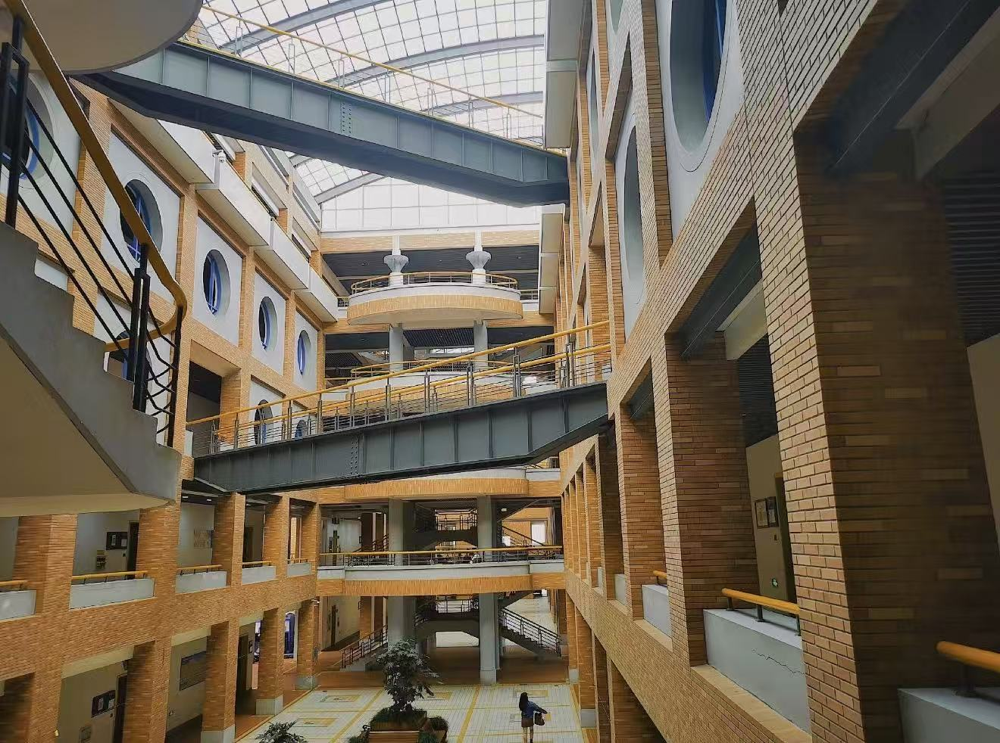
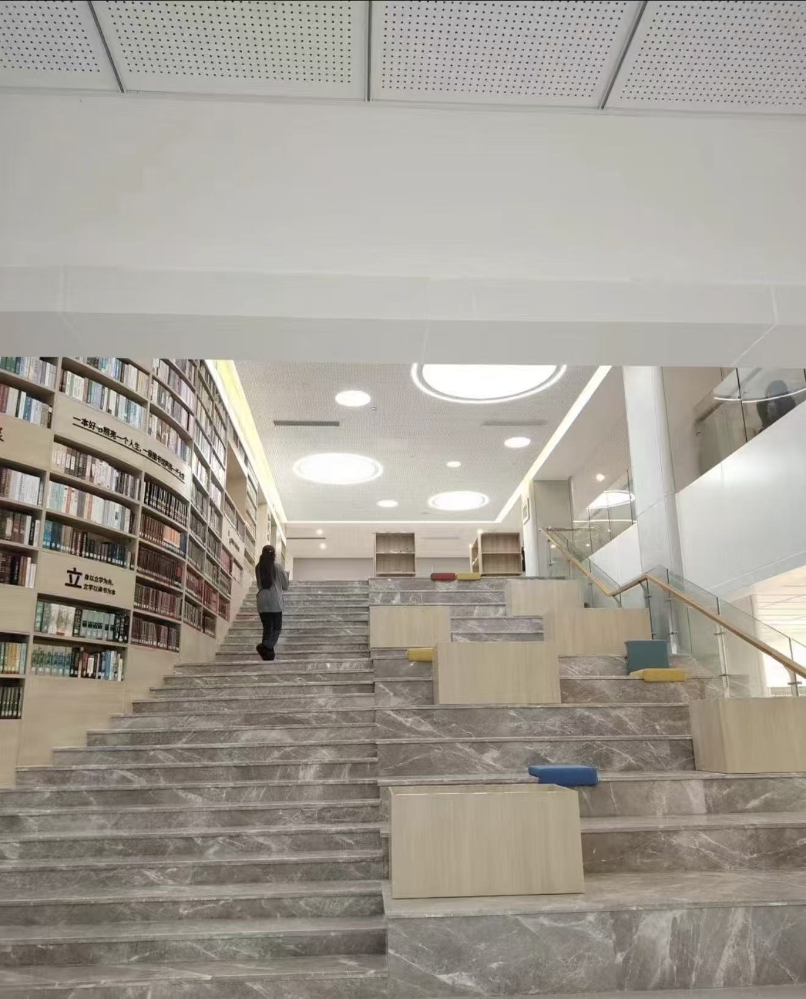

双学位分段培养
采用2+2学习模式，前两年在校内完成美术、设计、数字技术基础课程，后续可自主选择是否前往德国合作院校深造，两条发展路径都可行，毕业对应不同学位证书。
Art & Tech | Sino-German Dual Degree Program
姓名：张建宇（Dorado）
就读院校：浙江万里学院
所属学部：中德品牌学部
专业班级：艺术与科技 中德(2+2) 24A2班
培养模式：中德双学位2+2联合培养项目
我是张建宇，英文名Dorado，就读于浙江万里学院中德品牌学部艺术与科技2+2合作班。我们专业融合国内设计基础与德国数字艺术课程，两种截然不同的教学思路，也让我找到了自己更感兴趣的创作方向。
比起平面插画类创作，我对硬件交互、编程、三维建模更感兴趣。软件方面基础掌握PS、AE用来处理配套视觉素材，平时更多精力放在Arduino开发、传感器接线、简易代码编写上；同时学习CAD三维建模，尝试给自制硬件设备设计外壳，也会接触AI工具辅助生成装置外观参考图。
目前还处在入门摸索阶段，复杂代码、高精度建模暂时还无法独立完成，主要跟着课程一步步练习环境监测、感应灯光这类小型交互装置，一点点吃透硬件接线逻辑、基础编程语句和零件建模流程。我很喜欢把程序代码、实体硬件和简单视觉效果结合起来，做出可以互动的实物作品，经常围绕环保、环境感知主题完成课堂项目。
专业特色与学习优势
采用2+2学习模式，前两年在校内完成美术、设计、数字技术基础课程，后续可自主选择是否前往德国合作院校深造，两条发展路径都可行，毕业对应不同学位证书。
专业不局限单一美术创作，同时兼顾视觉设计、数字媒体、基础硬件、三维建模相关内容，培养兼顾审美与基础技术的综合设计学生。
同步学习中西方两种设计教学体系，对比不同的创作思路，拓宽自己的设计审美与思考方式，即便不赴德学习，也能吸收海外交互装置设计理念。
在校期间重点夯实Arduino硬件开发、传感器实操与三维建模能力，独立完成课堂交互装置全套作品，搭建线上作品集整合硬件项目与3D模型。未来以硬件交互、三维建模作为自身核心竞争力，从事智能交互装置相关设计工作，可自主选择是否赴德深造，平面设计仅作为配套辅助技能使用。
校园空间与学习环境展示


我喜欢打游戏、打羽毛球、看书，也喜欢将代码、硬件和视觉设计结合起来，探索交互装置的多种可能。通过Arduino与传感器实现环境感知，用3D建模设计结构与外壳，利用视觉素材提升体验表达，打造具有科技感与人文关怀的作品。